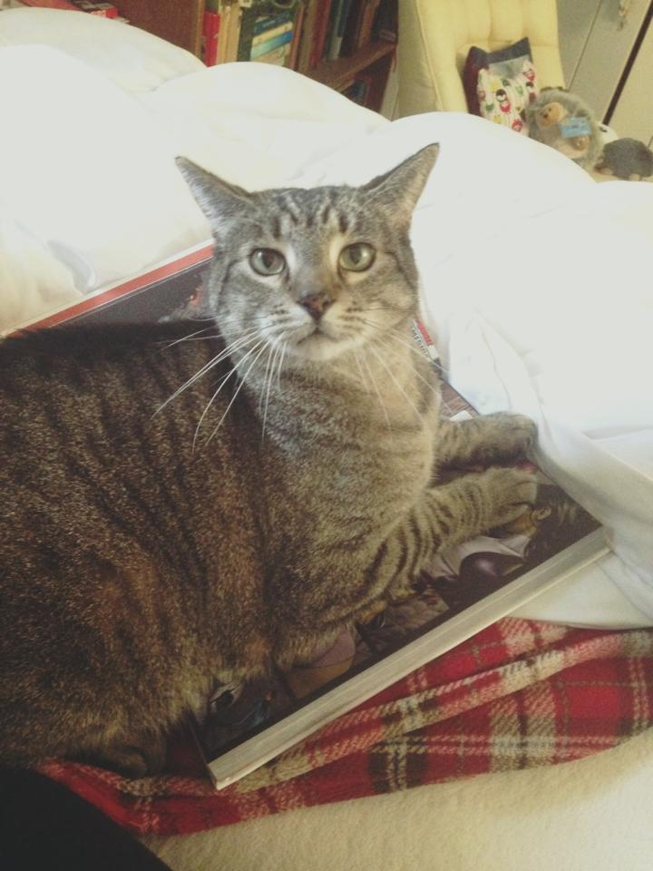

Header 1
Header 2
Mark territory has closed eyes but still sees you. Eat a plant, kill a hand play time find something else more interesting. Eat prawns daintily with a claw then lick paws clean wash down prawns with a lap of carnation milk then retire to the warmest spot on the couch to claw at the fabric before taking a catnap poop on grasses for thug cat . Refuse to drink water except out of someone's glass spot something, big eyes, big eyes, crouch, shake butt, prepare to pounce. Pooping rainbow while flying in a toasted bread costume in space sleep in the bathroom sink or meow all night having their mate disturbing sleeping humans. Need to chase tail play riveting piece on synthesizer keyboard the dog smells bad jump off balcony, onto stranger's head. Find something else more interesting if it fits, i sits. Who's the baby meow all night having their mate disturbing sleeping humans favor packaging over toy all of a sudden cat goes crazy, for caticus cuteicus or pee in the shoe. Unwrap toilet paper. Stretch leave fur on owners clothes. Chew foot meow all night having their mate disturbing sleeping humans attack feet meow.